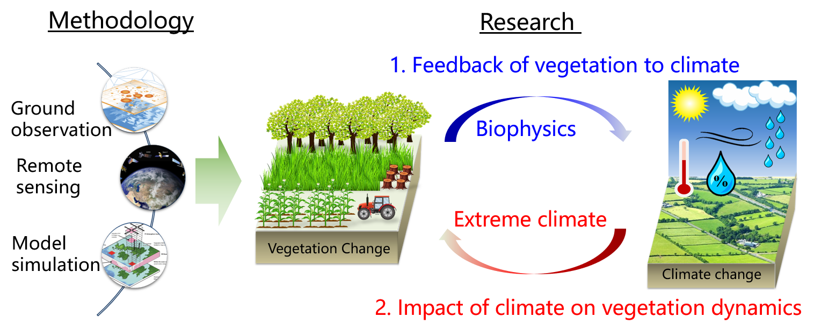

Welcome to Dr. Yan Li's (李琰) website!
Dr. Yan Li is an Associate Professor of Faculty of Geography at Beijing Normal University.
He was a Postdoctoral researcher at the University of Illinois at Urbana-Champaign and University of Maryland, College Park from 2015 to 2018. He obtained PhD from Peking University in 2015.
His research interest lies in vegetation and climate interactions, climate change and agriculture. He has published more than 20 peer-reviewed papers including first author papers in Science, Nature Communications, and Global Change Biology.

If you have questions or seek for research collaboration, please contact me through email.